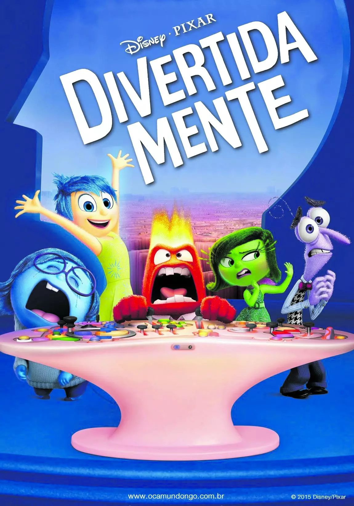
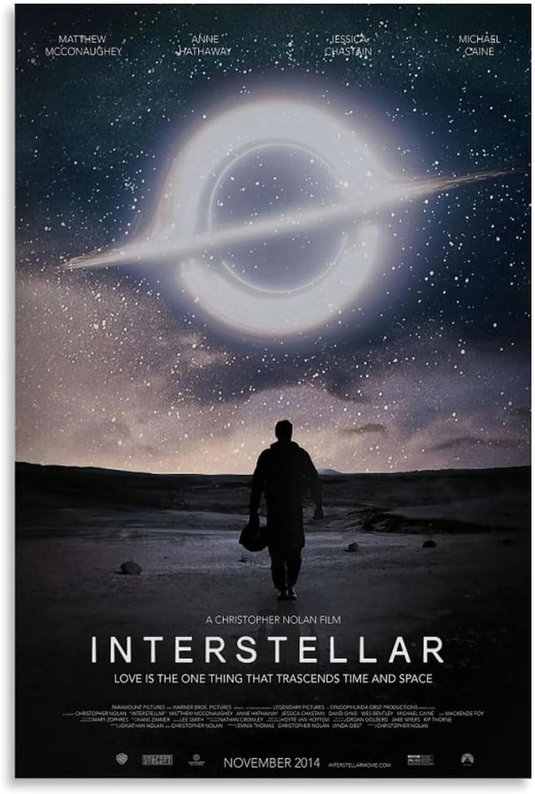

Escolhi "Eu tenho Visão com Filmes e Trilhas" porque nos meus momentos de descanso e lazer, gosto muito de assistir filmes e séries. Desde criança gosto de assistir. Gosto de uma variedade de gêneros, incluindo ficção científica, animações, suspense, aventura e drama. Além disso, gosto de fazer trilhas e estar no meio da natureza. Alguns dos meus filmes favoritos são Interestelar e Divertidamente.

Abaixo, coloquei algumas cenas que retratam esses filmes.
Trilhas
Abaixo, coloquei algumas fotos de lugares que já fiz trilhas. Trilha da Pedra do Baú a esquerda e Trilha no Pico São Domingos a direita.